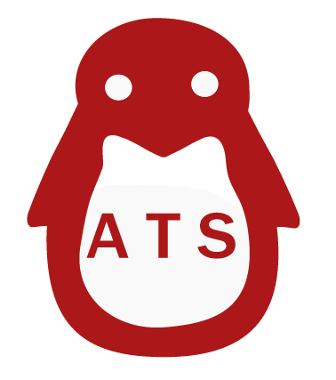
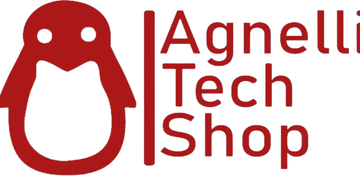

Salve, il mio nome è Alexandru Ioan Chindris
Sono un
Navigando nella mia pagina scoprirai cose nuove su di me
Sono un ragazzo di 17 anni che frequenta la classe quinta dell' Istituto Internazionale Edoardo Agnelli. Sono un grande appassionato del mondo dell'informatica. Imparo e applico competenze apprese sia a scuola che da progetti e corsi seguiti online.
Alla base della mia vita ci sono alcuni valori fondamentali:
Fede
Avere fede significa credere, confidare e obbedire al volere di Dio. Chi ha fede vede l’esistenza di Dio in ogni cosa, da quelle più piccole a quelle più grandi.
Professionalità
La professionalità sta nel sapere come farlo, quando farlo, e nel farlo. Fare pubblicità è come un gioco. Per vincere, lascia fare a chi gioca tutti i giorni.
Motivazione
Niente che valga davvero la pena di essere fatto è facile. Anch'io ho incontrato diversi ostacoli lungo il cammino, ma non rimpiango nulla. Perché? Durante il mio percorso ho affinato e messo alla prova le mie abilità.
Passione
“Non c'è passione nel vivere in piccolo, nel progettare una vita che è inferiore alla vita che potresti vivere.” NELSON MANDELA
Le mie passioni
Oltre alle attività scolastiche previste mi piace prendere parte a progetti anche extra-curricolari, per esempio come in foto abbiamo aiuto a montare e configurare i computer forniti dalla DELL per i nostri laboratori di informatica!Scopri di più cliccando QUI
 Insieme al nostro professore di indirizzo Antonio Mancuso abbiamo realizzato un progetto chiamato ATS, acronimo che sta per Agnelli Tech Shop. Un negozio online con sede fisica a scuola che offre servizi di stampo informatico a tutti i ragazzi della scuola e alle loro famiglie.Scopri di più cliccando QUI
Nel tempo libero mi piace uscire con gli amici, leggere libri e giocare al computer. Come molti pratico anche uno sport, la palestra. Ormai faccio palestra da circa 2 anni e ogni volta è come se fosse la prima!